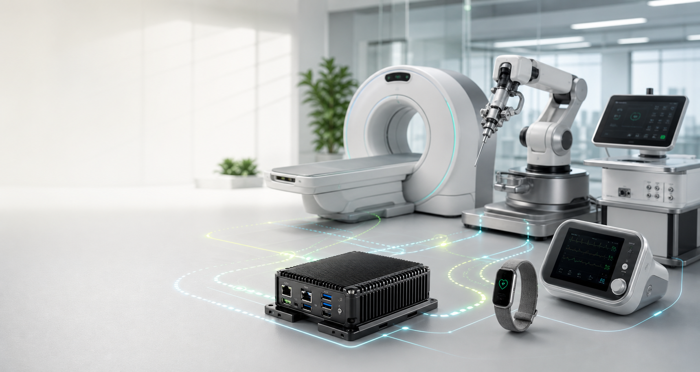
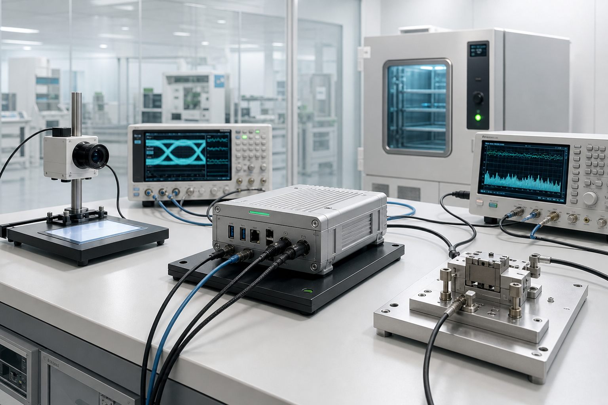

Medical imaging
Compute evaluation for reconstruction, enhancement, segmentation and device-side workflows.
MEDICAL DEVICE PARTNERS

COLLABORATION AREAS
Compute evaluation for reconstruction, enhancement, segmentation and device-side workflows.
Vision, signal and multimodal processing with local control and analysis.
Joint engineering for low-latency perception, navigation, control boundaries and redundancy.
Edge intelligence under power, privacy, connectivity and continuous-operation constraints.
These are examples of technical collaboration. They do not indicate that any HOLYCORES product has medical-device clearance, certification or authorization, and they are not medical advice.
PLATFORM CAPABILITIES

Joint validation begins with intended use, users, environment and hazards, translating model metrics into device-level success criteria with explicit versions, datasets, conditions and limitations.
RESPONSIBILITY MODEL
Compute platform, software interfaces, technical information, known limitations and agreed engineering support.
Intended use, design controls, risk management, product validation, submissions, manufacturing and post-market duties.
Data governance, model development, performance evidence, bias assessment, versions and integration.
Needs research, workflow evaluation and evidence generation under applicable ethics and data rules.
COLLABORATION PATH
Define use, device, users, environment and baseline.
Non-clinical engineering prototype for compute, software, data and interfaces.
Align design inputs, risk controls, verification and change processes.
Integration, lifecycle and issue response for the agreed platform.
MEDICAL DEVICE COLLABORATION